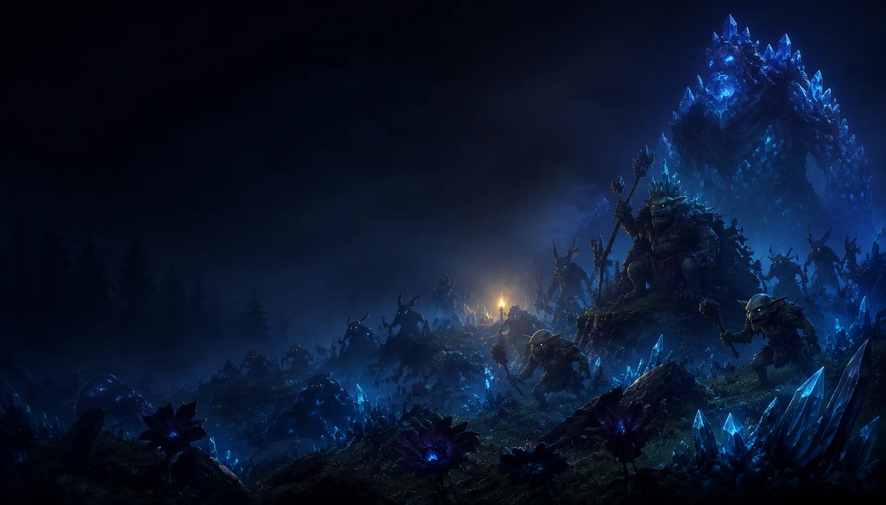
Bestiário
O que o cristal faz nascer
106 criaturas de Ermândia, do Vale das Flores-Sino às primeiras terras do norte. Toque numa criatura para abrir a ficha: status, espectro elemental e o que ela deixa cair.
- Todas as regiões106
- Vale das Flores-Sinonv 1-107
- Charneca dos Túmulosnv 1-54
- Socalcos da Pedreiranv 1-54
- Campo das Lanças Velhasnv 6-83
- Bosque do Veio-Raiznv 6-83
- Colmeias Saqueadasnv 7-71
- Ninho das Lançasnv 10-101
- Toca do Presa-Velhanv 10-101
- Bosque das Bétulas-Cinzanv 11-166
- Ruínas Azuladasnv 11-207
- Ribeirão de Cobrenv 11-166
- Coxilha do Capim-Ventonv 11-166
- Subsolo Azuladonv 19-191
- Charco dos Juncosnv 21-277
- Colinas dos Moinhos Quebradosnv 26-337
- Cripta Afogadanv 30-388
- Mata dos Espinhosnv 34-417
- Tocas dos Saqueadoresnv 38-458
- Sopé das Cinzasnv 46-546
- Minas do Veio Ferrugemnv 50-598
- Desfiladeiro Uivantenv 55-584
- Cicatriz de Cristalnv 60-601
106criaturas77com arte final


 Chefe
ChefeCharneca dos Túmulos
Níveis 1-5 · 4 criaturas


Socalcos da Pedreira
Níveis 1-5 · 4 criaturas


Campo das Lanças Velhas
Níveis 6-8 · 3 criaturas


Bosque do Veio-Raiz
Níveis 6-8 · 3 criaturas

Colmeias Saqueadas
Níveis 7 · 1 criatura

Ninho das Lanças
Níveis 10 · 1 criatura
Toca do Presa-Velha
Níveis 10 · 1 criatura
 Chefe
ChefeBosque das Bétulas-Cinza
Níveis 11-16 · 6 criaturas
 Chefe
ChefeEm produçãoarte sendo refeita


Ruínas Azuladas
Níveis 11-20 · 7 criaturas

 Chefe
Chefe


Coxilha do Capim-Vento
Níveis 11-16 · 6 criaturas

 Chefe
ChefeEm produçãoarte sendo refeita


Subsolo Azulado
Níveis 19 · 1 criatura
Charco dos Juncos
Níveis 21-27 · 7 criaturas
 Chefe
Chefe

Colinas dos Moinhos Quebrados
Níveis 26-33 · 7 criaturas


Cripta Afogada
Níveis 30-38 · 8 criaturas
 Monge AfogadoNível 30Crepúsculo
Monge AfogadoNível 30Crepúsculo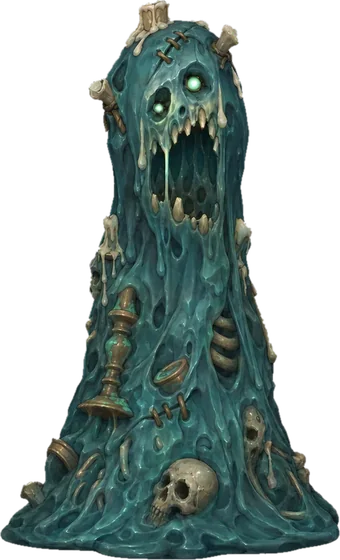
Lodo-OssárioNível 32Maré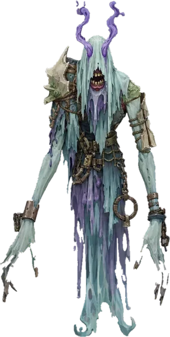
Lamento AfogadoNível 33Crepúsculo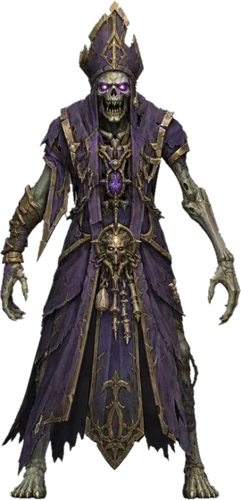
Abade AfogadoNível 37Crepúsculo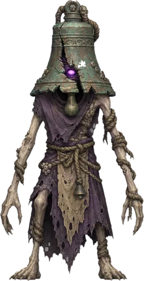
ChefeO Sineiro SubmersoNível 36Crepúsculo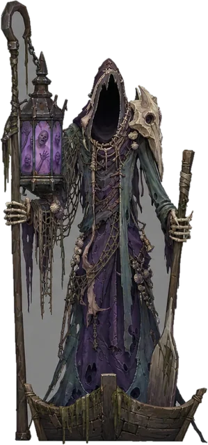
ChefeO Barqueiro Sem RostoNível 38CrepúsculoEm produçãoarte sendo refeita

Mata dos Espinhos
Níveis 34-41 · 7 criaturas
 Espreita-SarçaNível 36Seiva
Espreita-SarçaNível 36Seiva Centopeia-CascaNível 37Rocha
Centopeia-CascaNível 37Rocha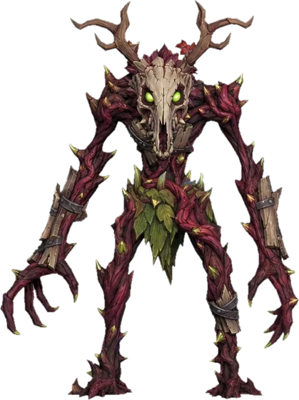
Espreita-RubraNível 40Seiva ChefeVelha Raiz-FamintaNível 41Seiva
ChefeVelha Raiz-FamintaNível 41SeivaEm produçãoarte sendo refeita

Tocas dos Saqueadores
Níveis 38-45 · 8 criaturas

 Chefe
Chefe

Sopé das Cinzas
Níveis 46-54 · 6 criaturas
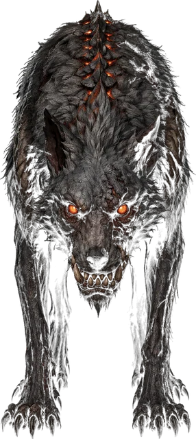
Lobo-de-CinzaNível 46Brasa Corvo-FuligemNível 47Brasa
Corvo-FuligemNível 47Brasa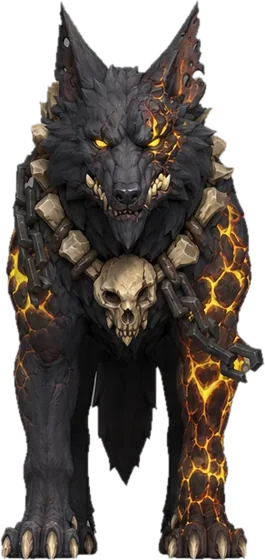
Lobo-ChamuscadoNível 50Brasa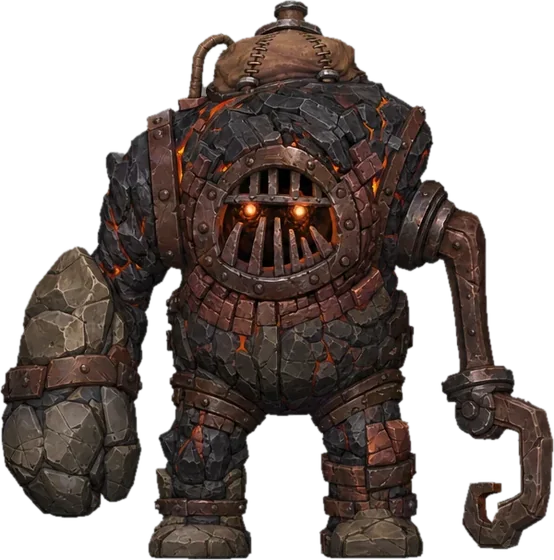
Golem de EscóriaNível 51Brasa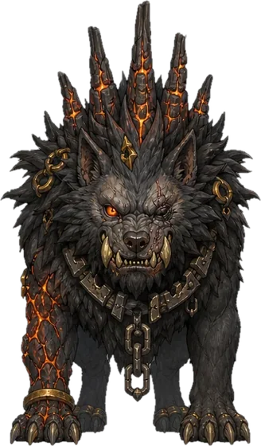
ChefeFauce-de-Brasa, o Lobo VelhoNível 54BrasaEm produçãoarte sendo refeita


 Chefe
Chefe Chefe
ChefeDesfiladeiro Uivante
Níveis 55-58 · 4 criaturas


Cicatriz de Cristal
Níveis 60 · 1 criatura
Em produçãoarte sendo refeita